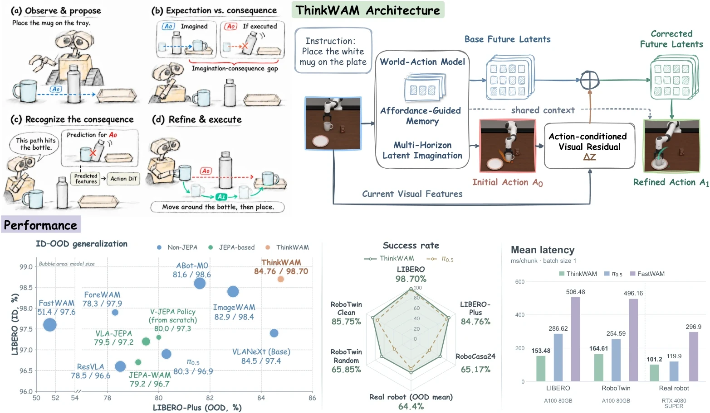

arXiv preprint · 2026
ThinkWAM: Rethinking Latent Futures for Action Refinement
A latent world-action model that rethinks predicted futures to refine robot actions.
Personal academic homepage
I am a master's student in Applied Statistics at Xi'an Jiaotong University. Previously, I received my bachelor's degree in Mathematics and Applied Mathematics from Shandong University in June 2026.
My research interests include WAM, VLA, and AI agents. In particular, I am interested in how world models can help robots anticipate the consequences of their actions and make better decisions.
Our paper ThinkWAM is now available on arXiv! Explore the project page and code.
* Equal contribution. † Co-corresponding authors.

arXiv preprint · 2026
A latent world-action model that rethinks predicted futures to refine robot actions.